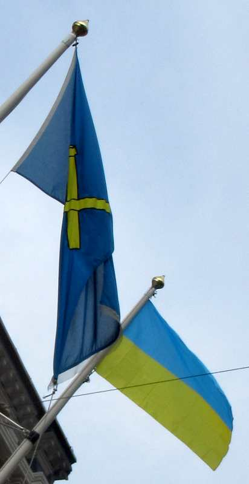

|
Tchi rouoge êcliatchîn slache lé jaune et l'bliu; les lopîns d'corps dêdgèrpis feunquent tout gris; les tanques clianquent au manche; les otchupants tuent; les bouonnes gens lus muchent d'lus machacréthie. Qu'chu vaîthîn reste en paix sait 'chîn... sait là. Chein tch'est l'pus près du dos, ch'est bein la c'mînse. À l'enn'mîn dêfrâlîndgi souos les las, dîthons: Navithe dé dgèrre Russe, va t'faithe tchînze! L'envahisseux malîn s'sa mîns à l'us; ses boulants à boulets mèrtchis d'un Z emboulés souos la couleu jaune et bliue par des fèrmièrs; ses troupes laîssies bein fraides et raides où'est qu'i' craîtront, les teursolés. L'ambition d'médgian touônnée en dêmînse par les d'fenseurs tchi font fouah des fîsées et dîthent: Navithe dé dgèrre Russe, va t'faithe tchînze! |
 |
Viyiz étout: